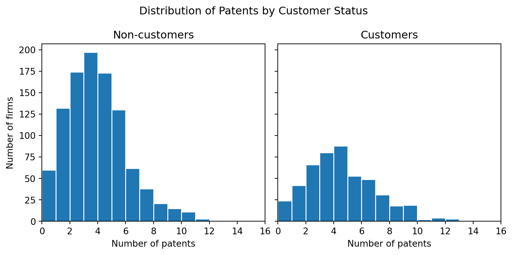
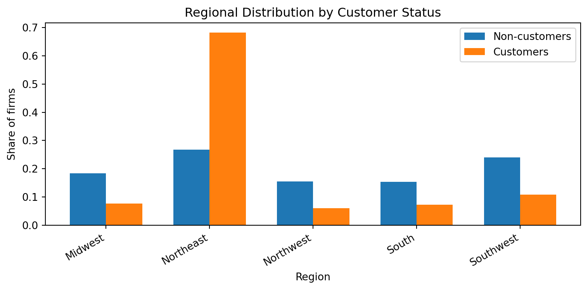
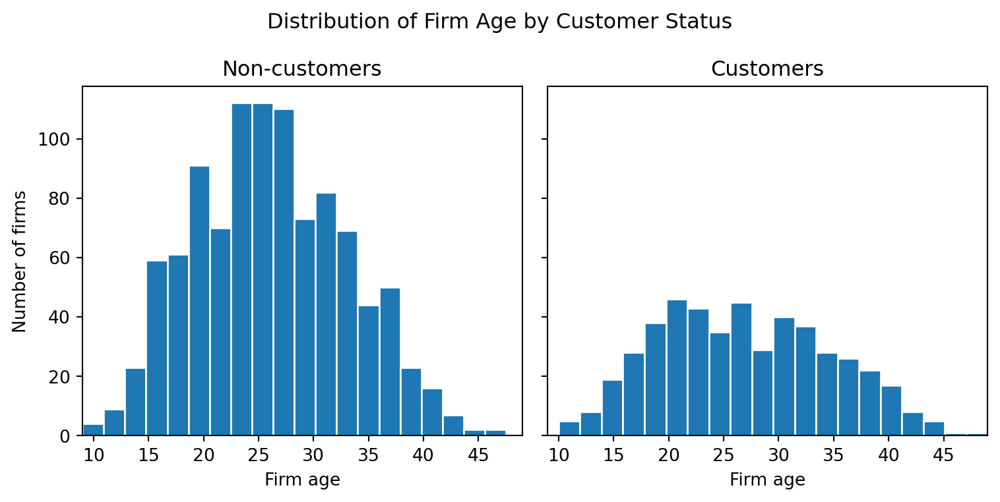
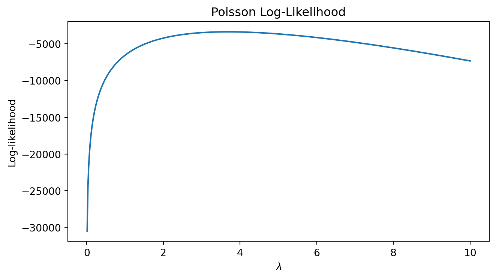

Poisson Regression and Maximum Likelihood Estimation
A Case Study of Blueprinty’s Software and Patent Awards
Author
Leia Kawamura
Published
May 18, 2026
Introduction
Blueprinty is a small firm that makes software for developing blueprints specifically for submitting patent applications to the US patent office.
This paper examines whether companies using Blueprinty’s software achieve better results in obtaining patents. Blueprinty provides software that assists in creating the drawings required for patent applications to the U.S. Patent and Trademark Office, and the company wishes to argue that using its software leads to successful patent approvals.
However, evaluating this claim is not straightforward. Ideally, one should compare each company’s success rates before and after software implementation, but such data is not available. What is available is data on 1,500 established engineering firms, covering the number of patents granted over the past five years, geographic location, years in operation, and whether or not they use Blueprinty.
It is important to note that the companies using Blueprinty were not selected at random. Therefore, even if a company using Blueprinty has a high number of patents, it is necessary to distinguish whether this is due to the software’s effectiveness or to characteristics such as the company’s age or geographic location.
Exploring the Data
Before estimating the relationship between Blueprinty use and patent outcomes, I first examine the raw differences between customers and non-customers. This exploratory analysis compares patent counts, regional location, and firm age across the two groups. These comparisons help show whether Blueprinty customers differ systematically from non-customers, which is important because customer status is not randomly assigned.
import polars as plimport matplotlib.pyplot as pltblueprinty = pl.read_csv("blueprinty.csv")blueprinty.head()
non_customer_patents = (blueprinty.filter(pl.col("iscustomer") ==0).select("patents").to_series())customer_patents = (blueprinty.filter(pl.col("iscustomer") ==1).select("patents").to_series())x_min = blueprinty.select(pl.col("patents").min()).item()x_max = blueprinty.select(pl.col("patents").max()).item()fig, axes = plt.subplots(1, 2, figsize=(8, 4), sharex=True, sharey=True)axes[0].hist(non_customer_patents, bins=range(x_min, x_max +2), edgecolor="white")axes[0].set_title("Non-customers")axes[0].set_xlabel("Number of patents")axes[0].set_ylabel("Number of firms")axes[0].set_xlim(x_min, x_max)axes[1].hist(customer_patents, bins=range(x_min, x_max +2), edgecolor="white")axes[1].set_title("Customers")axes[1].set_xlabel("Number of patents")axes[1].set_xlim(x_min, x_max)fig.suptitle("Distribution of Patents by Customer Status")plt.tight_layout()plt.show()

The histograms compare the number of patents for firms that use Blueprinty and firms that do not use Blueprinty. There are many more non-customers than customers in the dataset, so the non-customer histogram has higher counts overall. However, the two plots use the same x-axis scale, which makes the distribution of patent counts easier to compare.
Both groups have many firms with relatively few patents, but the customer group appears slightly more shifted toward higher patent counts. This suggests that Blueprinty customers have a higher average number of patents than non-customers. However, this raw difference should not be interpreted as causal evidence, because firms are not randomly assigned to use Blueprinty.
regions = non_customer_regions["region"].to_list()non_customer_props = non_customer_regions["proportion"].to_list()customer_props = customer_regions["proportion"].to_list()x =range(len(regions))width =0.35fig, ax = plt.subplots(figsize=(8, 4))ax.bar([i - width/2for i in x], non_customer_props, width, label="Non-customers")ax.bar([i + width/2for i in x], customer_props, width, label="Customers")ax.set_title("Regional Distribution by Customer Status")ax.set_xlabel("Region")ax.set_ylabel("Share of firms")ax.set_xticks(list(x))ax.set_xticklabels(regions, rotation=30, ha="right")ax.legend()plt.tight_layout()plt.show()

The regional distribution differs substantially between customers and non-customers. Among Blueprinty customers, the largest share of firms is located in the Northeast, while non-customers are more evenly distributed across regions. In contrast, regions such as the Midwest, Northwest, South, and Southwest make up smaller shares of the customer group than the non-customer group.
x_min = blueprinty.select(pl.col("age").min()).item()x_max = blueprinty.select(pl.col("age").max()).item()fig, axes = plt.subplots(1, 2, figsize=(8, 4), sharex=True, sharey=True)axes[0].hist(non_customer_age, bins=20, edgecolor="white")axes[0].set_title("Non-customers")axes[0].set_xlabel("Firm age")axes[0].set_ylabel("Number of firms")axes[0].set_xlim(x_min, x_max)axes[1].hist(customer_age, bins=20, edgecolor="white")axes[1].set_title("Customers")axes[1].set_xlabel("Firm age")axes[1].set_xlim(x_min, x_max)fig.suptitle("Distribution of Firm Age by Customer Status")plt.tight_layout()plt.show()

The age distributions of customers and non-customers are mostly similar, with most firms concentrated between about 20 and 35 years old. However, the customer group appears slightly more spread out, with a noticeable number of firms at both in younger and older ages. Non-customers are more tightly concentrated around the mid-20s.
A Simple Poisson Model via Maximum Likelihood
The outcome variable in this analysis is the number of patents awarded to each firm over the last five years. Since this variable is a count, it cannot be negative and must take non-negative integer values. A Normal distribution is not a natural fit because it allows negative values and non-integer outcomes. The Poisson distribution is therefore a natural starting point for modeling patent counts.
In this simple model, I assume that each firm’s patent count is drawn independently from the same Poisson distribution:
\[
Y_i \sim \text{Poisson}(\lambda)
\]
where \(\lambda\) is the common patent rate across firms. For one firm, the Poisson probability mass function is:
lambda_grid = np.linspace(0.01, 10, 500)loglik_values = [ poisson_loglikelihood(lam, Y) for lam in lambda_grid]plt.figure(figsize=(7, 4))plt.plot(lambda_grid, loglik_values)plt.xlabel(r"$\lambda$")plt.ylabel("Log-likelihood")plt.title("Poisson Log-Likelihood")plt.tight_layout()plt.show()

The log-likelihood curve shows how likely the observed patent counts are for different values of \(\lambda\). The maximum point of the curve is the maximum likelihood estimate. Visually, the peak occurs close to the sample mean of the patent counts.
To find the MLE analytically, take the derivative of the log-likelihood:
The numerical MLE is identical to the sample mean up to the precision shown in Python. This matches the analytical result that the MLE for \(\lambda\) in a simple Poisson model is \(\bar{Y}\). In this model, the optimizer finds the same value because the log-likelihood is maximized at the sample mean.
Poisson Regression
The simple Poisson model assumed that every firm had the same patent rate, \(\lambda\). This is useful as a starting point, but it is too restrictive for this application because firms differ in ways that may affect patenting. For instance, older firms may have more experience and resources, firms in different regions may operate in different innovation environments, and Blueprinty customers may differ systematically from non-customers.
To allow the patent rate to vary across firms, I now use a Poisson regression model:
\[
Y_i \sim \text{Poisson}(\lambda_i)
\]
when
\[
\lambda_i = \exp(X_i'\beta).
\]
In the fraction, \(X_i\) contains firm characteristics such as age, age squared, region indicators, and customer status. The exponential function is used because the Poisson rate parameter must be positive. Since \(X_i'\beta\) can take any real value, using \(\exp(X_i'\beta)\) make sure that \(\lambda_i\) is always greater than zero.
The matrix \(X\) includes an intercept, firm age, firm age squared, region indicators, and customer status. I include age squared because the relationship between firm age and patenting may not be perfectly linear. For example, patenting may increase as firms mature but eventually level off. I drop one region category when constructing the region indicators because including all regions along with an intercept would create perfect collinearity. The omitted region becomes the reference category.
def poisson_regression_loglikelihood(beta, Y, X): eta = X @ beta lam = np.exp(eta) log_likelihood = np.sum( Y * eta- lam- gammaln(Y +1) )return log_likelihood
def negative_poisson_regression_loglikelihood(beta, Y, X):return-poisson_regression_loglikelihood(beta, Y, X)beta_start = np.zeros(X.shape[1])beta_start[0] = np.log(np.mean(Y))result = sp.minimize( negative_poisson_regression_loglikelihood, beta_start, args=(Y, X), method="BFGS")beta_hat = result.xbeta_hat
The coefficient estimates obtained from the manually optimized likelihood function and the Poisson GLM in statsmodels are very close. This confirms that the log-likelihood function and the optimization procedure are working correctly. While the standard errors may differ slightly, this is because the manual calculation uses the Hessian evaluated at the estimated coefficients, whereas statsmodels employs its own numerical calculations and implementation details.
In Poisson regression, coefficients are interpreted on a log-rate scale. A positive coefficient indicates that, holding other variables constant, the variable is associated with an increase in the number of predicted patents. A negative coefficient indicates that, holding other variables constant, the variable is associated with a decrease in the number of predicted patents.
The customer coefficient is particularly important because it measures the relationship between Blueprinty usage and the number of expected patents after adjusting for the number of years since the company’s founding, the square of that number, and region. Taking the exponential of this coefficient yields the incidence ratio. If the customer coefficient is positive, Blueprinty customers are predicted to exhibit a higher patent incidence rate compared to non-customers with similar characteristics. If it is negative, customers are predicted to exhibit a lower patent incidence rate.
However, caution is still required when interpreting this coefficient. This estimate indicates the adjusted association between Blueprinty usage and the number of patents, and does not necessarily demonstrate a causal effect of the software. This is because, even after adjusting for years since establishment and region, whether a company is a customer or not is not randomly assigned.
The Effect of Blueprinty’s Software
The customer coefficient from the Poisson regression is useful, but it is not directly interpreted as the number of additional patents caused by Blueprinty. This is because the Poisson regression model is multiplicative: the coefficients affect the expected patent count through \(\lambda_i = \exp(X_i'\beta)\). To make the result easier to interpret, I construct two counterfactual datasets.
In the first counterfactual dataset, every firm is treated as if it were not a Blueprinty customer. In the second counterfactual dataset, every firm is treated as if it were a Blueprinty customer. All other firm characteristics, including age, age squared, and region, are held fixed at their observed values. Comparing the predicted patent counts under these two scenarios gives an estimate of the average difference associated with Blueprinty customer status.
customer_col = coef_names.index("iscustomer")X0 = X.copy()X1 = X.copy()X0[:, customer_col] =0X1[:, customer_col] =1yhat_0 = np.exp(X0 @ beta_hat)yhat_1 = np.exp(X1 @ beta_hat)average_yhat_0 = np.mean(yhat_0)average_yhat_1 = np.mean(yhat_1)average_effect = np.mean(yhat_1 - yhat_0)print("Average predicted patents if no firms used Blueprinty:", round(float(average_yhat_0), 4))print("Average predicted patents if all firms used Blueprinty:", round(float(average_yhat_1), 4))print("Estimated average effect of Blueprinty customer status:", round(float(average_effect), 4))
Average predicted patents if no firms used Blueprinty: 3.4362
Average predicted patents if all firms used Blueprinty: 4.229
Estimated average effect of Blueprinty customer status: 0.7928
The first prediction, \(\hat{y}_0\), estimates the expected number of patents for each company assuming it is not a Blueprinty customer. The second estimate, \(\hat{y}_1\), estimates the expected number of patents for each firm if it were a Blueprinty customer. The average of \(\hat{y}_1 - \hat{y}_0\) across all firms indicates the estimated average effect of being a Blueprinty customer, holding firm age and region constant.
Based on this model, after controlling for a company’s years in operation and region, being a Blueprinty customer is associated with an increase of approximately 0.7928 patents per company over a five-year period. This result provides evidence consistent with the company’s marketing claim that firms using Blueprinty’s software are more successful in obtaining patents.
However, this analysis is based on observational data rather than a randomized experiment and is therefore somewhat less certain. Although the model controls for firm age and region, unobserved differences may still exist between customers and non-customers, such as research budgets, legal resources, management quality, and innovation strategies. These unobserved factors may also influence patent counts. Therefore, while these results support an adjusted association between Blueprinty usage and patent outcomes, they do not prove that Blueprinty’s software directly leads to an increase in a firm’s patent count.